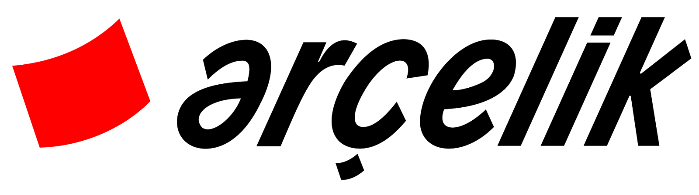
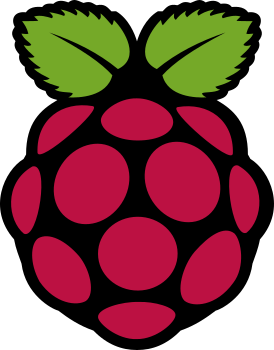
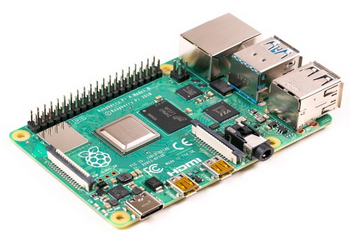

Service Kit: Portable Diagnostic System for Arçelik
A group project to design a portable kit that detects and analyzes malfunctions in Arçelik refrigerators on the field, featuring on-the-field firmware updates via cloud, aiming to decrease repair time and maintenance expenses.
About Arçelik
Arçelik A.Ş. is a multinational household appliances manufacturer based in Türkiye and a core subsidiary of Koç Holding. It is one of the leading consumer electronics and white goods manufacturers in Europe, operating globally under well-known brands like Beko and Grundig.
The Goal
Service Kit project aims to design a portable kit that can detect and analyze various malfunctions for Arçelik refrigerators on the field and decrease the time for the repairment of faulty refrigerators. Service Kit aims to combine several functions regarding the repairment process, including on-the-field firmware updates. Service technicians interface with this kit entirely through a dedicated Android App UI created to control the Service Kit.
Features & Architecture
Service Kit is able to measure the instantaneous power consumption of the refrigerator, establish a serial connection between the refrigerator and the Service Kit, gather data from external sensors, classify malfunctions using Machine Learning algorithm, and program and update the firmware of the electronic control card of the refrigerator through Cloud Service on-the-field. The system is managed seamlessly via the Android App UI, serving as the main control panel for the service technicians.


Hardware & Implementation
The Service Kit includes a Raspberry Pi at the center of the kit. The external sensors and the power measurement circuit are directly connected to the Raspberry Pi. Raspberry Pi continuously communicates with the Cloud server where the Machine Learning algorithm runs, and the up-to-date firmware files are stored.
My Contribution
In this project, I managed the machine learning components and the data pipeline. I was responsible for the serial interfacing of sensors with the Raspberry Pi, enabling the collection of data across various parameters, such as temperature, vibration, and live diagnostic info directly from the refrigerator's electronic control card. I gathered this data under different failure modes to build a custom dataset from scratch. Using Python and libraries like Scikit-Learn, Pandas, and NumPy, I trained a machine learning model to classify newly observed failures into specific faulty components, such as the compressor or fan. Finally, I deployed this model onto a cloud server so it could be used for live diagnostics on the field.
Expected Impact
A huge time and money-saving are expected with this kit with the ability of programming the electronic control cards on the field without requiring any additional modules and using solely Raspberry Pi. The Service Kit will prevent the unnecessary replacement of the electronic control card. This project is expected to be used in the field and decrease the maintenance expenses of Arçelik A.Ş. significantly.